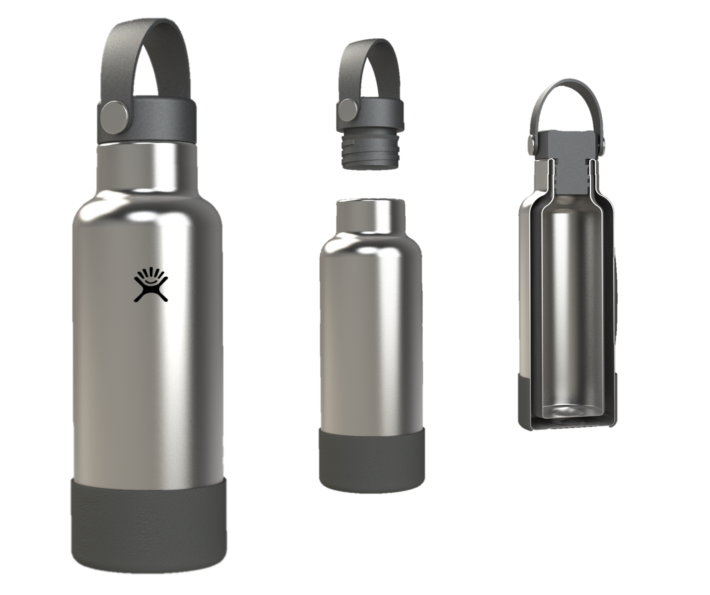

Mechanical Design Projects
Silver Lake Automation Internship
As a mechanical design intern, I designed and supported the manufacturing of 13 unique structures, 4 original mechanisms, and numerous custom parts for a robotic welding cell. The video shows a 3D model (designed in Solidworks) of this robotic welding cell. I created part and assembly drawings and closely facilitated in-house and external manufacturing. This project also exposed me to a variety of OTS components commonly used in industrial automation (pneumatic grippers and cylinders, light curtains, keyence safety scanners, locator pins, saginaw doors, to name a few). It was a creative and challenging experience that I enjoyed immensely. I touched virtually every aspect of this welding cell, and today it is installed and running at QuickStart in Savannah, GA.
CAD Projects
HydroFlask: Surface & Master Modeling Techniques
I created an exact CAD model of the popular vacuum-insulated water bottle, the Hydroflask, by referencing the engineering drawings from the 18 oz model.
To create the delicate and precise curvatures in the hydroflask, I used surface modeling techniques as opposed to solid modeling techniques. In addition, I used master modeling between the bottle (master) and the boot (slave) such that the boot's dimensions are dependent on the bottle's dimensions.
This project was a fun introduction to surface modeling and turned out looking pretty sweet, if I do say so myself...
Next-Generation Design: Dyson Corrale Hair Straightener
 I created this next-generation model of the Dyson Corrale Hair Straightener from scratch.
To acheive a similar look as the original, I used the sketch picture tool to create the outer housing profile.
Then, I used surface and solid modeling techniques to create the outer housing parts, plates, hinge, cord, and interior components.
Key features of this next-gen design are the inclusion of a water-tank for improved straightening effect (not visible), 360° swivel chord that replaced an unwieldy rechargable battery—and of course—a freshened color scheme!
I created this next-generation model of the Dyson Corrale Hair Straightener from scratch.
To acheive a similar look as the original, I used the sketch picture tool to create the outer housing profile.
Then, I used surface and solid modeling techniques to create the outer housing parts, plates, hinge, cord, and interior components.
Key features of this next-gen design are the inclusion of a water-tank for improved straightening effect (not visible), 360° swivel chord that replaced an unwieldy rechargable battery—and of course—a freshened color scheme!
Capstone Project: The No Boil-Over Pot
What is the No Boil-Over Pot?
This proof-of-concept design is a smart cooking system that autonomously prevents boil-over. As opposed to a stand-alone appliances, (InstaPot, rice cooker, crockpot, etc) this system works with any pot and can integrate with most home stoves. With this setup, users don’t need to worry about their dinner boiling over, but can walk away and let the algorithm do the work. Click here for more details on how the system works.

My Contributions
I touched every aspect of this project (software, electronics & mechanical design), but here I'll detail my contributions to the handle design.
The handle needed to house the electronics (microcontroller, battery, thermocouple, etc) of the system securely and compactly, as well as be watertight.
These requirements were considered from the beginning and are seen in the final design. Key features to note: intricate mating halves of the inner housing minimized the size of the handle,
as well as a gap between the inner and outer housing layers where epoxy would later be poured for waterproofing.
In future iterations, the electronics could be simplified to a custom PCB, allowing for the handle to be even smaller and more ergonomic.